Flow Over a Double-Sided Membrane
Simulate an incompressible, steady-state, turbulent flow over a double-sided membrane. View velocity vectors, velocity magnitude color maps, monitor lift and drag forces, and export results for ixCube 4-10 (the successor to ixForten 4000).
 Caedium Membrane CFD Simulation
Caedium Membrane CFD Simulation
Goals
In this tutorial, you will learn how to:
- Specify fluid conditions on a single volume for an incompressible, steady-state, turbulent flow simulation
- Specify boundary conditions on faces
- Specify meshing parameters
- Generate a velocity magnitude color map
- Generate velocity vectors
- Create lift and drag force monitors
- Monitor residuals to determine flow simulation convergence
- Export results for ixCube 4-10
Assumptions
- You have activated the Caedium RANS Flow and Caedium Viz Export add-ons or Caedium Professional.
- You are familiar with Caedium essentials.
- You have either:
- Created the geometry by following the tutorial "Double-Sided Membrane"
- Launched Caedium with the project file (membrane.sym) containing the geometry for this tutorial
The geometry within Caedium should appear as shown below.
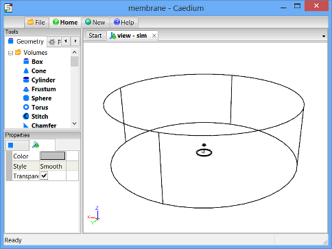
Prepare the Volume
Right-click an edge of the volume, double-click the first volume (volume_2) in the Select dialog and then select Properties from the menu. In the Properties Panel, select the Volume tab  and set the Name to flow-volume.
and set the Name to flow-volume.
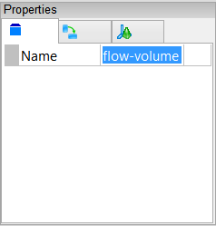
Create Membrane Group
Create a group for the membrane and its shadow so that later on in this tutorial you can monitor the integrated drag and lift forces.
Right click on the membrane base edge. In the Select dialog select face_6-shadow, press the Ctrl key and select face_6 in the Select dialog, click OK, select Group, and then select Properties.
In the Properties Panel, select the Group tab  and set Name to membrane.
and set Name to membrane.
Specify the Substance Settings
Specify the Fluid Conditions
Select the Physics Tool Palette.
Select Gases->Air. The Properties Panel will show the default properties for air. To enable incompressible turbulent (viscous) flow the State->Rotational and State->Viscous properties should be set to Yes (their default values), and the State->Compressible, State->Heat Transfer, State->Species, and State->Transient properties should to be set to No (their default values).
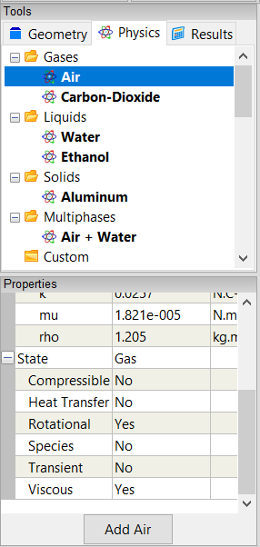
Drag and drop the Air tool onto an edge of the volume. Select Done to set air as the fluid inside the volume.
Set the Reference Velocity for the Simulation
The reference velocity will be used to initialize the simulation and to specify the Inlet-Outlet velocity boundary condition. In this tutorial you will set a reference velocity of [15 0 0] m.s-1.
In the Properties Panel set Substance: Air->Properties->Phase: Single->Reference->U: Fixed Value->Value to be [15 0 0] and press Enter on the keyboard.
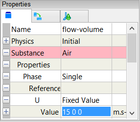
Set the Non-Orthogonal Corrections for the Simulation
In the Properties Panel, expand the Substance: Air->Solver: RANS Flow->Solution property, and then set Non-Orthogonal Corrections to be 0.
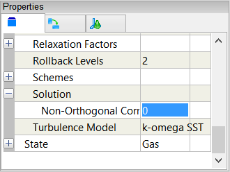
Specify the Boundary Conditions
Wall Conditions
Drag and drop the Faces->Wall tool onto an edge of the volume. Double-click flow-volume->Faces in the Select dialog and select Done to create walls on the outer surfaces of the volume.
A Wall condition is a solid surface through which fluid cannot flow.
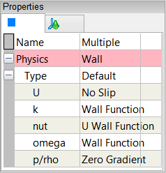
Inlet-Outlet Conditions
Drag and drop the Faces->Inlet-Outlet tool onto edge_8 (blue). In the Select dialog select face_1, press Ctrl and select face_5 in the Select dialog, click OK, and select Select/Deselect. Select edge_7 (red) in the View Window, in the Select Dialog select face, press Ctrl and select face_4, click OK, select Group, and select Done.
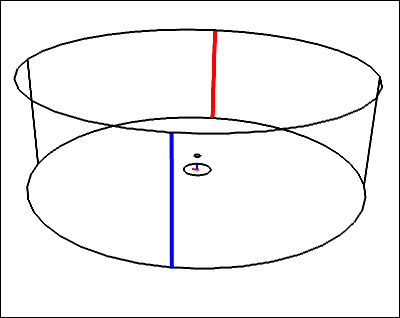
An Inlet-Outlet condition allows the fluid to enter or leave the flow domain.
Set Name to circumference.
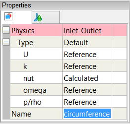
Slip Condition
Drag and drop the Faces->Slip tool onto an edge of the face shown in green below, double-click face_3 in the Select dialog and select Done.
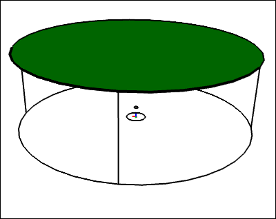
A Slip condition ensures the flow velocity remains tangential to a face.
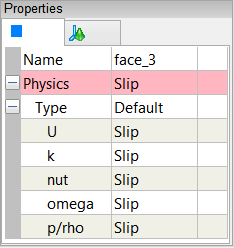
Specify Meshing Parameters
You do not need to apply any volume or boundary condition prior to focusing on the meshing process - all that is required is an active Substance on your flow domain.
Face Mesh
First you will focus on the surface mesh to avoid the extra time required to create the volume mesh.
To see individual surface mesh elements during the meshing process, right-click on the View Window background, double-click sim->Faces, and select Properties from the menu. In the Properties Panel, set Style to Flat.
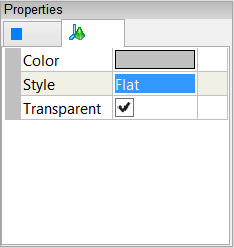
Select the Results Tool Palette. With all faces still selected from the previous operation select the Scalar Fields->A (area) tool, click Add A at the bottom of the Properties Panel and select Color Map.
The request for the A color map will cause all the faces to be meshed.
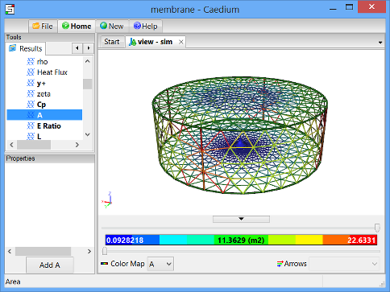
Zoom the view using the mouse wheel to focus on the membrane mesh.
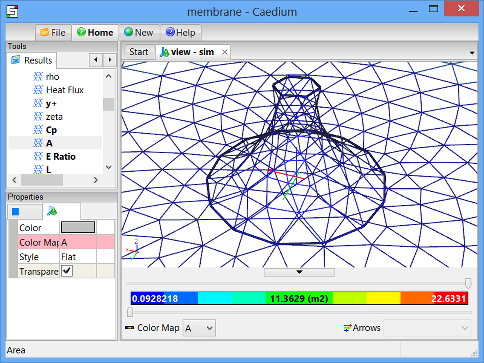
Select the Physics Tool Palette.
Select the Special->Accuracy tool. In the Properties Panel set Accuracy to Custom and set Resolution to 100. Drag and drop the Accuracy tool onto a membrane edge, double-click face_6 in the Select dialog, and select Done.
Applying the Accuracy tool will cause all the faces to be remeshed which will take a few seconds.
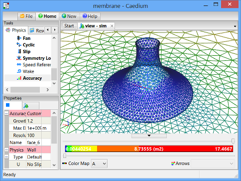
Volume Mesh
To see individual volume mesh elements after the volume meshing process is complete, right-click on any edge in the View Window, double-click flow-volume, and select Properties from the menu. In the Properties Panel, turn off the Transparent property and set Style to Flat.
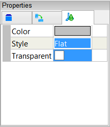
Select the Results Tool Palette. With the volume still selected from the previous operation double-click the Scalar Fields->Vol Ratio (volume ratio = actual volume/ideal volume) and select Color Map.
The request for the Vol Ratio color map will cause the entire volume to be meshed which will take a few seconds.
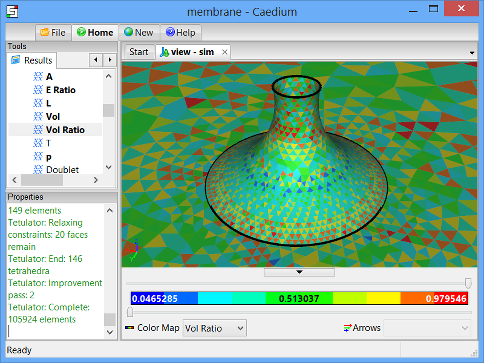
Drag the upper threshold slider to the left in the View Legend to examine the cells with the lowest quality (lowest value in the blue range).
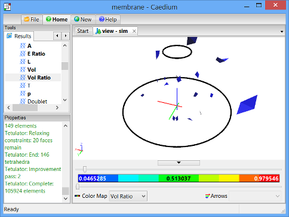
If you were to see clusters of low quality cells attached to the geometry then that is a sign that you need to improve the mesh in that region using the Accuracy tool. Fortunately this mesh does not suffer from low quality element clusters and you can proceed on with the simulation.
Display Initial Velocity Color Map
Drag and drop the Vector Fields->U (velocity) tool onto the View Window (view) background, double-click sim->Faces, select Color Map to create contours of velocity magnitude on all faces.
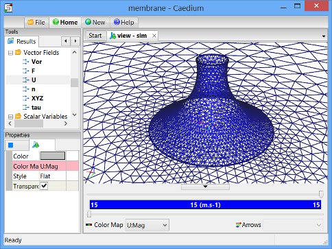
In the Properties Panel, set Style to Smooth.
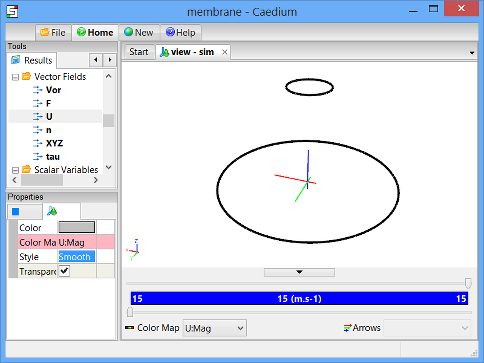
Check that the velocity magnitude value (shown in the View Legend color bar) matches the value you expect as confirmation that your reference velocity is correct.
Display Initial Velocity Vectors
Drag and drop the Vector Fields->U (velocity) tool onto an edge of the circumference faces, double-click the circumference group in the Select dialog, and select Arrows to create arrows colored by velocity magnitude.
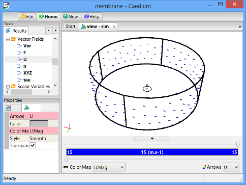
Check that the arrows are oriented in the direction you expect as confirmation that your reference velocity is correct.
Create Force Monitors
In this step you will set up lift and drag monitors for the membrane on the same monitor plot.
Drag Monitor
Drag is the force parallel to the flow direction, created by the air moving over the membrane. In this case, drag is represented by the X-direction (default) of the F (force) vector variable.
Drag and drop the Vector Variables->F (force) tool onto a membrane edge. Double-click the membrane group in the Select dialog and select Monitor.
Drag and drop the F Monitor tab over to the right-hand edge of the Caedium application window to split the window into two parts as shown below.
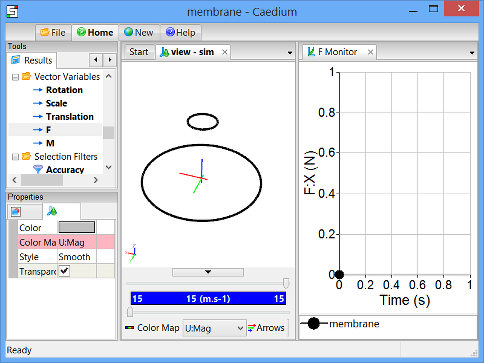
Left-click membrane in the F Monitor Legend, left-click again to edit the title, and change it to Drag. In the Properties Panel, set the Symbol to None.
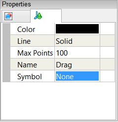
Lift Monitor
Lift is the force perpendicular to the flow direction, created by the air moving over the membrane. In this case, lift is represented by the Z-direction of the F (force) vector variable.
To monitor lift and drag on the same plot, first you will create another series (plot curve) for the membrane on the original drag monitor, and then you will set this plot series to monitor lift.
In the View Window (view) right-click on an edge of the membrane, double-click the membrane group in the Select dialog, and select Copy. Left-click in the Monitor Window (F Monitor) to give it focus, then right-click and select Paste.
Left-click membrane in the F Monitor Legend, left-click again to edit the title, and change it to Lift. In the Properties Panel, set the Symbol to None.
In the Results Tool Palette, select the Vector Variables->F tool. In the Properties Panel set Scalar to Z.
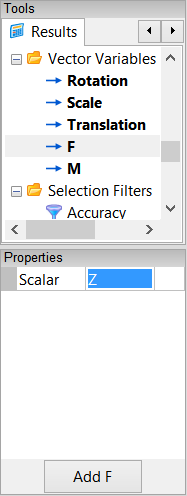
Drag and drop the Vector Variables->F (force) tool onto Lift in the F Monitor Legend, and select Y Axis.
Left-click in the Monitor Window (F Monitor) to give it focus, then in the Properties Panel rename the Y Axis to Force.
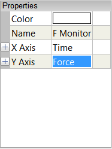
The final state of the lift and drag monitor is show below.
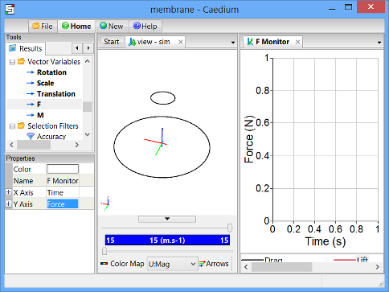
Create Residuals Monitor
Left-click in the View Window to give it focus. Drag and drop the Special->Residuals tool onto a membrane edge. Double-click flow-volume in the Select dialog and select Monitor to create the residuals monitor.
Drag and drop the Residuals tab over to the top-right-hand edge of the Caedium application window to split the window into three parts as shown below.
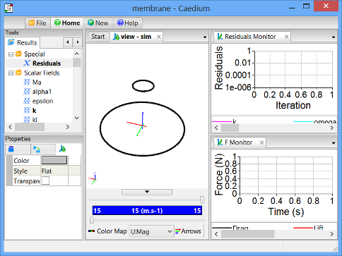
Run the Flow Solver
The number of flow (simulation) solver iterations is determined by multiplying the number of simulation time-steps (default = 5) by the number of iterations per simulation time-step (default = 100). The number of simulation time-steps is determined by dividing the simulation duration (default = 5 s) by the simulation time-step (default = 1 s). After each simulation time-step (equivalent to 100 iterations by default) the results will be refreshed. For this simulation the defaults are fine and will result in a total of 500 iterations.
In the Home Toolbar click the Run button  to run the flow solver.
to run the flow solver.
If you wanted to interrupt the flow solver, you would re-click the Run button; the solver would then stop at the end of the current simulation time-step.
Let the solver complete its run. Note the updates of the velocity vectors, velocity color map, the forces monitors, and the residuals monitor as the simulation progresses.
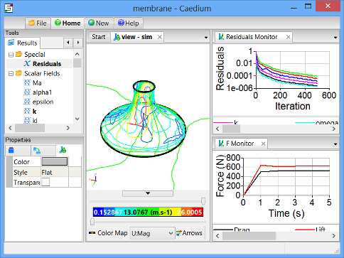
Solver convergence is indicated by:
- The Residuals Monitor shows the solver residuals decreased with increasing iterations smoothly and progressed below 0.001, i.e., over 3 orders of magnitude reduction
- The Drag and Lift monitors both show convergence close to single values with increasing iterations
To make it easier to differentiate between the inner and outer membrane results, select the membrane base edge, in the Select dialog double-click face_6 (inner results), and select Properties. In the Properties Panel, turn off the Transparent property.
If you change the reference velocity flow direction then you will also need to change theta used by the drag monitor. Select the View Window background, in the Select dialog double-click sim. In the Properties Panel select the Simulation tab  and set Constants->theta accordingly.
and set Constants->theta accordingly.
Export Results to ixCube 4-10
ixCube 4-10 can import CFD results from Caedium as Alias/Wavefront (.obj) for the geometry and as Comma Separated Values (CSV) for the pressure coefficient (Cp) and pressure (p) data.
Create New View
Select the New Toolbar and click the View button to create view_1.
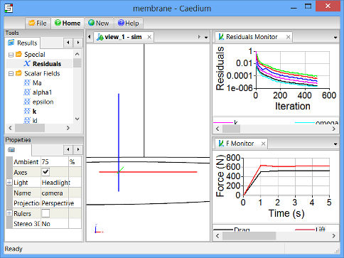
Export the Membrane as .obj
Select the membrane base edge, in the Select dialog double-click face_6, and select Properties. In the Properties Panel turn off the Transparent property.
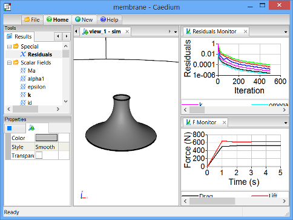
Right click on the View Window (view_1) background, in the Select dialog select sim->Edges, press the Ctrl key and select sim->Axes in the Select dialog, and click OK. In the Properties Panel turn on the Transparent property.
This should leave only the membrane face visible ready for export.
Select the File Toolbar and click the Export button  . In the Export dialog set Save as type to Alias/Wavefront (*.obj), set the File name to membrane-cp.obj, and click Save.
. In the Export dialog set Save as type to Alias/Wavefront (*.obj), set the File name to membrane-cp.obj, and click Save.
In addition to the membrane-cp.obj file the export operation will also save a membrane-cp.mtl file.
Export Cp Data as .csv
Drag and drop the Scalar Fields->Cp (pressure coefficient) tool onto the shaded membrane face in view_1. In the Select dialog double-click the membrane group, and select XY Plot to create a plot of the Cp values on the membrane faces.
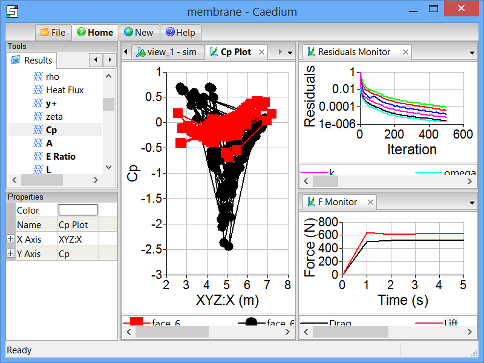
Select File->Export. In the Export dialog set Save as type to Plot Series (*.csv), set the File name to membrane-cp.csv, and click Save.
Using the same process you can also create a pressure plot with the Scalar Fields->p tool for export.
Feedback
Questions? Ideas? Problems?